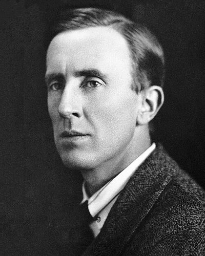

Ideologies / Meme
What is Anarcho Monarchism?
Anarcho Monarchism is a political ideology in the Meme family. Usually treated as a joke, but it has a real source. Tolkien wrote that his politics leaned toward anarchy, meaning the abolition of control, or else toward unconstitutional monarchy. The idea is a crown that exists as a symbol and a last resort while daily life is left ungoverned, rural and traditional, with deep suspicion of machines and planners.
A king who leaves everyone alone.
Defined from: J. R. R. Tolkien, Letter to Christopher Tolkien, 29 November (1943)
See how close you are to Anarcho Monarchism Dare a friend to answer as one


Where Anarcho Monarchism stands on 13 axes
Each axis runs from 0 to 100. A score of 50 is the middle. On a classic compass it sits in the Libertarian Right quadrant.
| Axis | Position | Score | In words |
|---|---|---|---|
| EconomyMarket to Planned | 30 | Strongly Market | |
| OwnershipPrivate to Collective | 30 | Strongly Private | |
| RightsLiberty to Security | 5 | Very strongly Liberty | |
| GovernmentDemocracy to Autocracy | 60 | Leans Autocracy | |
| StructureDecentralised to Centralised | 5 | Very strongly Decentralised | |
| NationInternationalist to Nationalist | 45 | Balanced | |
| ImmigrationMulticulturalist to Assimilationist | 55 | Balanced | |
| ValuesProgressive to Traditional | 95 | Very strongly Traditional | |
| TechnologyAccelerationist to Precautionary | 95 | Very strongly Precautionary | |
| EnvironmentIndustrialist to Environmentalist | 85 | Very strongly Environmentalist | |
| ReligionSecular to Religious | 90 | Very strongly Religious | |
| MilitaryPacifist to Militarist | 20 | Strongly Pacifist | |
| TradeFree Trade to Protectionist | 45 | Balanced |
Ideologies closest to Anarcho Monarchism
- Crunchy Conservatism80% alike
- Distributism79% alike
- Postliberalism78% alike
- Agrarianism78% alike
- Traditionalist Conservatism77% alike
Its opposite on this map is Posadism, at 15%.
Parties near Anarcho Monarchism
- American Solidarity PartyUnited States. Platform and Principles (2024)74% alike
- Centre PartyGermany. The Soest Programme (1870)74% alike
- Anti Revolutionary PartyNetherlands. Our Programme (1879)72% alike
- Italian People's PartyItaly. Appeal to the Free and Strong (1919)71% alike
Common questions
What is Anarcho Monarchism?
Anarcho Monarchism is a political ideology in the Meme family. Usually treated as a joke, but it has a real source. Tolkien wrote that his politics leaned toward anarchy, meaning the abolition of control, or else toward unconstitutional monarchy. The idea is a crown that exists as a symbol and a last resort while daily life is left ungoverned, rural and traditional, with deep suspicion of machines and planners.
What does Anarcho Monarchism believe?
In one line: A king who leaves everyone alone. Its strongest positions are Liberty, Decentralised, Traditional. Usually treated as a joke, but it has a real source. Tolkien wrote that his politics leaned toward anarchy, meaning the abolition of control, or else toward unconstitutional monarchy. The idea is a crown that exists as a symbol and a last resort while daily life is left ungoverned, rural and traditional, with deep suspicion of machines and planners.
Who founded Anarcho Monarchism?
Anarcho Monarchism is defined here from Letter to Christopher Tolkien, 29 November (1943) by J. R. R. Tolkien. The thinker most tied to it is J. R. R. Tolkien (1892 to 1973).
Is Anarcho Monarchism left wing or right wing?
On a classic two axis compass Anarcho Monarchism falls in the Libertarian Right quadrant, which means the economic right and the libertarian side. Left and right hide a lot, though, which is why EthosScales scores it on thirteen separate axes.
How is Anarcho Monarchism different from Crunchy Conservatism?
They are close: 80% alike. The biggest gaps are on Rights, where Anarcho Monarchism scores 5 and Crunchy Conservatism scores 35, and Government, where Anarcho Monarchism scores 60 and Crunchy Conservatism scores 30. On each axis, 0 is one end and 100 is the other.
Think this is wrong? Suggest a correction. The scores are editorial estimates.